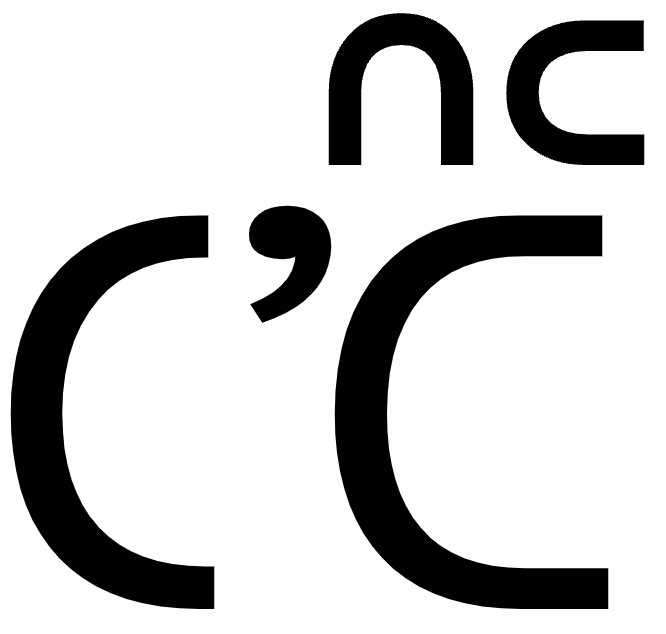
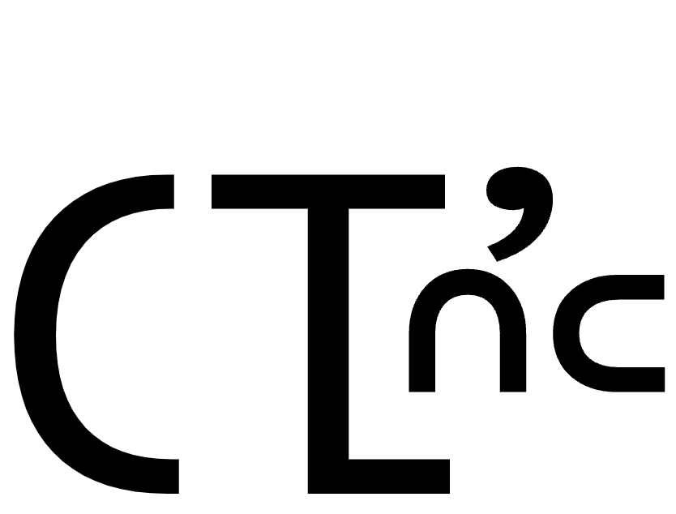
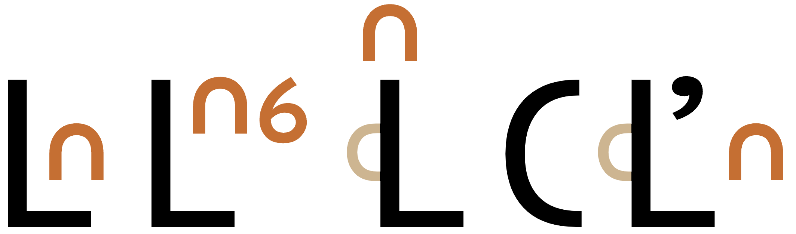
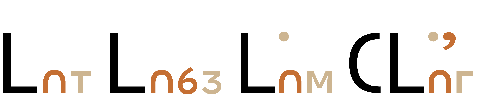
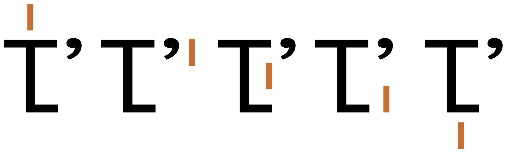
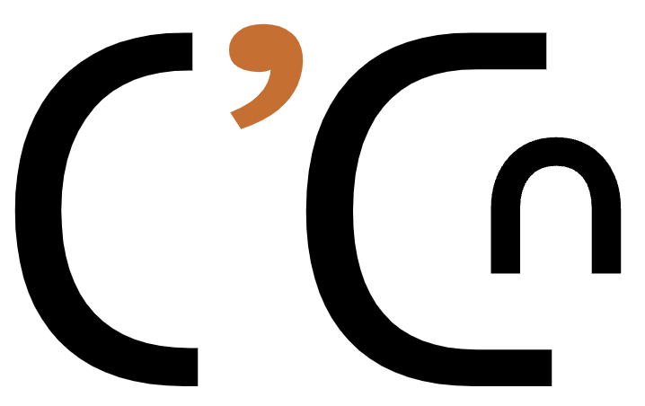
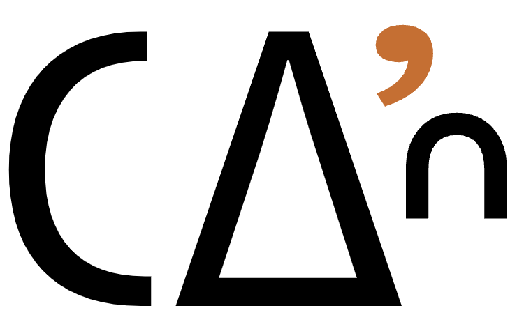

This page brings together basic information about the Pollard script and its use for the A-Hmao language. It aims to provide a brief, descriptive summary of the modern, printed orthography and typographic features, and to advise how to write A-Hmao using Unicode.
The Pollard script has evolved over the course of its history, with 2 major milestones in 1936 and 1988. Although they agree that modern usage is generally closer to the 1936 approach, the sources used are not crystal clear which characters exactly are used in contemporary writing, so this page describes both the 1936 and 1988 versions of the orthography as described by Joakim Enwall.
The A-Hmao language has around 300,000 speakerseth, in northeast and central Yunnan and northwestern Guizhou provinces, however it is just one of a number of closely related languages and dialects spoken in China. Despite numerous attempts to define a romanised orthography, the Pollard or Miao script is still the primary script for writing the A-Hmao languageeth, and is also used or other dialects and languages such as Lisu and Yi. Literacy in the orthography described here is high, and in addition to Bible translations it has been used for a large number of hand-written traditional songs and storiesc, for bilingual educational materials, and elementary textbooks.pf
The script was invented by James Pollard and others, and was first used in 1905. This page describes two describes two snapshots of the orthography, one in 1936 and the other in 1988, as described by Joakim Enwall The 1936 version was the result of a number of revisions, but was then used to publish a translation of the New Testament. Beginning in the 1950s, significant revisions of the script produced an alternative version which Enwall dates to 1988 and calls the Chuxiong Reformed Pollard Script. It handles tone marks differently and provides additional consonants for a more phonetic version of the script. The contemporary Miao communities appear to prefer the older version of the orthography.
The Pollard script is an alphabet, ie. consonants and vowels are written separately. See the table to the right for a brief overview of features for the A-Hmao language.
The information in this page is based on the orthographies for the Miao script in 1936 and 1988, as described by Joakim Enwall. It is consistently reported that users of the Pollard script today prefer the 1936 orthography over the 1988 revision, however the sources consulted provided little reliable evidence as to which characters exactly are used in modern writing. This page, therefore, puts the spotlight on the 2 orthographies described by Enwall in his book A Myth Become Reality on pages 185ff, and presents both alternatives.
The Pollard script is strongly focused on writing syllables, and splits each syllable into an onset and a rhyme. We will describe the orthography in these terms here, rather than as simple consonants and vowels.
A-Hmao text runs left-to-right in horizontal lines. There is no case distinction. Words are typically monosyllabic, but may also be made up of more than one syllable. Spacing occurs around syllable boundaries, rather than word boundaries.
Syllable onsets in the 1936 orthography always contain one of 22 basic consonant letters. The consonant sound can be prenasalised or aspirated, or both. Prenasalisation is indicated using the letter 𖽐 immediately before the consonant. Aspiration is indicated using the combining mark 16F51 immediately after the consonant.
The 1988 (Chuxiong) orthography has more consonants (totalling 43) because it describes the sounds phonetically, rather than phonemically, and provides symbols that cover a wider range of voicing or devoicing for the consonants. These variants are separate code points, written with a dot in the upper right corner of the letter glyph. The dot is built in to the glyph for the consonant, and not a combining mark. The same code points can be written in alternative form using a 'wart' appended to the consonant shape, and is the default shape in the Unicode charts. The choice of dot or wart is a font-related distinction. The sources consulted don't make it clear whether these 'wart' characters are used by people writing in the Pollard script today.
The Pollard script is an alphabet where the rhymes are written using 24-25 combining marks. In some cases, dipthongs and rhymes with final consonants are written using a single combining mark, but in other cases 2 combining marks are used.
Tone is written differently in the 2 orthographies described here. The 1936 orthography uses 3 invisible characters after the vowel to place the vowel mark(s) in positions relative to the onset, and the position indicates the tone. In the 1988 Chuxiong revision, 7 explicit tone mark letters are used, in which case vowels and tone marks sit on the baseline.
Syllable-initial standalone vowels are preceded by 𖽃.
The following represents the repertoire of the A-Hmao language.
Click on the sounds to reveal locations in this document where they are mentioned.
Phones in a lighter colour are non-native or allophones. Source Wikipedia.
Vowel sounds
Plain vowels
For a list of diphthongs see the summary tables in vowels.
Consonant sounds
labial
dental
alveolar
retroflex
palatal
velar
uvular
glottal
stop
pb
tdtl̥dl
ʈɖ
kɡ
qɢ
ʔ
ᵐpᵐb
ⁿtⁿdⁿtl̥ⁿdl
ᶯʈᶯɖ
ᵑkᵑɡ
ᶰqᶰɢ
pʰ
tʰtl̥ʰ
ʈʰ
kʰ
qʰ
ᵐpʰ
ⁿtʰⁿtl̥ʰ
ᶯʈʰ
ᵑkʰ
ᶰqʰ
affricate
t͡sd͡z
ʈ͡ʂɖ͡ʐ
t͡ɕd͡ʑ
ⁿt͡sⁿd͡z
ⁿʈ͡ʂⁿɖ͡ʐ
ⁿt͡ɕⁿd͡ʑ
t͡sʰ
ʈ͡ʂʰ
t͡ɕʰ
ⁿt͡sʰ
ⁿʈ͡ʂʰ
ⁿt͡ɕʰ
fricative
fv
sz
ʂʐ
ɕʑ
xɣ
χ
hɦ
nasal
mm̊
nn̊
ɳ
ɲɲ̊
ŋŋ̊
approximant
w
ll̊
ɭ̊ɭ
Tone
A-Hmao is a contour tone language, with 8 tones. It also has a particularly complex tone sandhi process by which tones interact with and alter the tones and other phonemes in other words.pj,2
Structure
The A-Hmao is strongly focused on syllables. Many words are monosyllabic, although there are also multi-syllabic words.
Onsets are based on consonants, which can be prenasalised, aspirated, voiced, devoiced, or a mixture of the foregoing. The rhyme may have a final nasal, but typically ends in a vowel or a diphthong.
Vowels
Rhyme summary table
The following table summarises the main rhyme to character assigments for the 1936 orthography, according to Enwall.
Plain
𖽡␣𖽱␣𖽷␣𖽵␣𖽜␣𖽪
𖽝␣𖽙
𖽳
𖽔
Complex
𖽨␣𖽡𖽝␣𖽡𖽙␣𖽢␣𖽤␣𖽡𖽻␣𖽣␣𖽡𖽾
𖽫␣𖽪𖽺␣𖽭␣𖽪𖽙
𖽺␣𖽞␣𖽟␣␣␣𖽙𖽾
𖽠
𖽹␣𖽻␣𖽗
Chuxiong rhyme summary table
The following table summarises the main rhyme to character assigments for the 1988 Chuxiong revision, according to Enwall.
Plain
𖽡␣𖽱␣𖽷␣𖽜␣𖽪
𖽝␣𖽙
𖽳
𖽔
Complex
𖽨␣𖽦␣𖽱𖽺␣𖽢␣𖽤␣𖽡𖽻␣𖽡𖽾␣𖽡𖽞
𖽫␣𖽪𖽺␣𖽭␣𖽪𖽙␣𖽬
𖽺␣𖽞␣𖽟␣␣␣𖽙𖽾
𖽠
𖽹␣𖽘␣𖽻␣𖽗␣𖽗𖽾
Combining marks used for vowels
𖼞𖽡
kiU+1B13 MIAO LETTER KA + U+16F61 MIAO VOWEL SIGN I
All vowel diacritics are typed and stored after the base consonant, and the glyph rendering system takes care of the positioning relative to the onset at display time (see tones.
All of the vowel signs are spacing marks, meaning that they consume horizontal space when added to a base consonant.
1936 orthography
A-Hmao uses the following dedicated combining marks for rhymes or their components. They may be used on their own, or in combination with others (see compositeV).
𖽡␣𖽢␣𖽣␣𖽤␣𖽨␣𖽱␣𖽷␣𖽵␣𖽜␣𖽪␣𖽟␣𖽫␣𖽭␣𖽝␣𖽞␣𖽺␣𖽙␣𖽳␣𖽠␣𖽔␣𖽗␣𖽹␣𖽻␣𖽾
1988 orthography
The Chuxiong orthography uses the following dedicated combining marks for rhymes or their components. They may also be used on their own, or in combination with others (see compositeV).
𖽡␣𖽢␣𖽤␣𖽦␣𖽨␣𖽱␣𖽷␣𖽜␣𖽪␣𖽟␣𖽫␣𖽬␣𖽭␣𖽝␣𖽞␣𖽺␣𖽙␣𖽳␣𖽠␣𖽔␣𖽗␣𖽹␣𖽻␣𖽾␣𖽘
Changes
The differences between the 1936 orthography and the 1988 one are as follows:
i̯e𖽡𖽝 changed to 𖽦.
i̯o𖽡𖽙 changed to 𖽱𖽺.
i̯an𖽣 was dropped.
iŋ𖽡𖽞 was added.
ʉ𖽵 was dropped.
u̯an𖽬 was added.
ɑɯ̯𖽘 was added.
aŋ𖽗𖽾 was added.
Multipart rhymes
𖼞𖽡𖽾
kinU+1B13 MIAO LETTER KA + U+16F61 MIAO VOWEL SIGN I + U+16F7E MIAO VOWEL SIGN NG
In many cases, a single combining mark expresses the rhyme, even if it contains multiple phones (see the list above). However, in some cases multiple combining marks are used. The following lists those found in the 1936 orthography.
𖽡𖽝␣𖽡𖽙␣𖽡𖽻␣𖽡𖽾␣𖽪𖽺␣𖽪𖽙␣𖽙𖽾
Standalone vowels
Standalone vowels are written using 𖽃 as the base.
In the 1936 orthography, and most commonly used approach for modern text, the tone is indicated by the position of the vowel(s). The position is indicated using one of 3 invisible formatting characters, which must be used immediately after the vowel. An absence of tone mark indicates tone 3u,785, and the vowel remains on the baseline. These are illustrated here:
16F00 16F71
16F00 16F71 16F8F
16F00 16F71 16F90
16F00 16F71 16F91
If the rhyme is composed of more than one vowel diacritic, all the diacritics are moved together to the appropriate position. For example,
16F00 16F61 16F5D 16F90
Observation: The sources consulted don't indicate how these positions map to actual tones, nor why there are fewer of them than explicit tone letters used in the Chuxiong revision.
Unicode supports a fourth tone position, bottom, which is not used for A-Hmao.
16F00 16F71 16F92
Chuxiong revision
One of the significant changes in the 1988 revision is that tones are expressed using dedicated glyphs, and both vowels and tone marks sit on the baseline. Again, the default tone is indicated by a tone mark absence. For example:
16F00 16F71
16F00 16F71 16F93
16F00 16F71 16F94
𖾓␣𖾔␣𖾕␣𖾖␣𖾗␣𖾘␣𖾙
The tone marks are letters and they are stored immediately after the vowele,189.
54
𖾔
24
𖾓
55
none
22
𖾕
44
𖾖
21
𖾗
22
𖾘
21
𖾙
No explanation is given as to why there are 2 sets of duplicates in the list.
Observation: Page 155 of Enwalle,155 has a similar table for the Chuxiong orthography, but the counter assignments are somewhat different, and don't involve duplicates.
Other tone marks
The Unicode Standard lists the following tone marks as archaic (with no indication of the contours they map to).
𖾚␣𖾛␣𖾜␣𖾝␣𖾞␣𖾟
Consonants
1936 onset summary table
The following table summarises the main consonant to character assigments of the 1936 orthography.
The right column contains alternative letters used to write phonetic sounds; they are not normally used.
Stops
𖼀␣𖼀𖽑␣𖼊␣𖼊𖽑␣𖼎␣𖼎𖽑␣𖼞␣𖼞𖽑␣𖼡␣𖼡𖽑␣𖽃
𖼁␣𖼋␣𖼏␣𖼟␣𖼢
𖽐𖼀␣𖽐𖼀𖽑␣𖽐𖼊␣𖽐𖼊𖽑␣𖽐𖼎␣𖽐𖼎𖽑␣𖽐𖼞␣𖽐𖼞𖽑␣𖽐𖼡␣𖽐𖼡𖽑
𖽐𖼁␣𖽐𖼋␣𖽐𖼏␣𖽐𖼟␣𖽐𖼢
Lateral release stops
𖼚␣𖼚𖽑
𖼛
𖽐𖼚␣𖽐𖼚𖽑
𖽐𖼛
Affricates
𖼷␣𖼷𖽑␣𖼮␣𖼮𖽑␣𖼮𖽡␣𖼮𖽑𖽡
𖼸␣𖼯␣𖼯𖽡
𖽐𖼷␣𖽐𖼷𖽑␣𖽐𖼮𖽑␣𖽐𖼮␣𖽐𖼮𖽡␣𖽐𖼮𖽑𖽡
𖽐𖼸␣𖽐𖼯␣𖽐𖼯𖽡
Fricatives
𖼇␣𖼈␣𖼺␣𖼻␣𖼳␣𖼳𖽡␣𖼽␣𖼦␣𖼦
Nasals
𖼄␣𖼄𖽑␣𖼐␣𖼐𖽑␣𖼐𖽡␣𖼐𖽑𖽡␣𖼐␣𖼐𖽑␣𖼣␣𖼣𖽑
𖼅␣𖼑␣𖼑𖽡␣𖼕␣𖼣
Approximants & laterals
𖽂␣𖼖␣𖼘
Chuxiong onset summary table
The following table summarises the main consonant to character assigments of the 1988 (chuxiong) orthography.
The right column contains aspirated phones.
Stops
𖼀␣𖼁␣𖼀𖽑␣𖼊␣𖼋␣𖼊𖽑␣𖼎␣𖼏␣𖼎𖽑␣𖼞␣𖼟␣𖼞𖽑␣𖼡␣𖼢␣𖼡𖽑␣𖽃
𖽐𖼀␣𖽐𖼁␣𖽐𖼀𖽑␣𖽐𖼊␣𖽐𖼋␣𖽐𖼊𖽑␣𖽐𖼎␣𖽐𖼏␣𖽐𖼎𖽑␣𖽐𖼞␣𖽐𖼟␣𖽐𖼞𖽑␣𖽐𖼡␣𖽐𖼢␣𖽐𖼡𖽑
Lateral release stops
𖼚␣𖼛␣𖼚𖽑␣𖼜␣𖼝␣𖼜𖽑
𖽐𖼚␣𖽐𖼛␣𖽐𖼚𖽑␣𖽐𖼜␣𖽐𖼝␣𖽐𖼜𖽑
Affricates
𖼷␣𖼸␣𖼷𖽑␣𖼪␣𖼫␣𖼪𖽑␣𖼮␣𖼯␣𖼮𖽑
𖽐𖼷␣𖽐𖼸␣𖽐𖼷𖽑␣𖽐𖼪␣𖽐𖼫␣𖽐𖼪𖽑␣𖽐𖼮␣𖽐𖼯␣𖽐𖼮𖽑
Fricatives
𖼇␣𖼈␣𖼺␣𖼻␣𖼳␣𖼴␣𖼽␣𖽀␣𖼨𖽑␣𖼩␣𖽃𖽑
Nasals
𖼄␣𖼅␣𖼄𖽑␣𖼐␣𖼑␣𖼐𖽑␣𖼬␣𖼭␣𖼬𖽑␣𖼔␣𖼕␣𖼔𖽑␣𖼣␣𖼣␣𖼣𖽑
Approximants & laterals
𖽂␣𖼖␣𖼘␣𖼖𖽑␣𖼘𖽑
Basic consonants
Whereas the table just above takes you from sounds to letters, the following simply lists the basic consonant letters.
1936 orthography
The following consonant letters are those used for the 1936 orthography. The letters for stops and affricates represent both unvoiced and voiced sounds.
The 1988 orthography includes many more basic consonant letters because it provides distinct letters for the voiced stops and affricates, as well as some other new letters. It also has a number of letters that produce the same sound as another; the intended difference is no longer apparent.
The letters with dots alongside them are a new feature of the 1988 orthography. In fact, these are encoded using the same code points as letters rendered by default in the Unicode block chart with a 'wart'; the difference is only made by the font. For example, 𖼛U+16F1B MIAO LETTER DLHA and 𖼛U+16F1B MIAO LETTER DLHA are exactly the same letter.
Changes
The differences between the 1936 orthography and the 1988 one are as follows. The changes also percolate through into the aspirated, voiced, and prenasalised forms.
Dotted consonant letters are part of the basic letters in the 1988 orthography. Corresponding code points are available for use with other versions, but they show a 'wart' rather than a dot.
tɬ can be written either 𖼚 or 𖼜 in the 1988 orthography.
ʑ can be written either 𖼽 or 𖽀 in the 1988 orthography.
t͡ɕ is 𖼮𖽡 in 1936, but 𖼪 in 1988.
ɕ is 𖼳𖽡 in 1936, but 𖼴 in 1988.
x is 𖼦 in 1936 (like h), but 𖼨𖽑 in 1988.
h is 𖼦 in 1936, but 𖽃𖽑 in 1988.
ɲ is 𖼐𖽡 in 1936, but 𖼬 in 1988.
ɳ is 𖼐 in 1936 (like n), but 𖼔 in 1988. The 1988 glyph shapes for this character and for ŋ are also slightly different, although basically the same.
l can be written either 𖼖 or 𖼘 in the 1988 orthography. In the 1936 orthography the latter was ɬ, but in 1988 that sound is written using the aspiration marker (with either base character).
Repertoire extension
Most sources list the following letters as in use by A-Hmao. They are not listed in the 1936 repertoire by Enwall. Unfortunately, the sources don't usually indicate whether these are in regular use in modern A-Hmao writing. They cover allophonic sounds that occur in the language. Note the circle, which is typically referred to as a 'wart'. (In the 1988 revision, the wart becomes a dot at the right of the base shape.)
𖼁␣𖼋␣𖼏␣𖼟␣𖼢␣𖼸␣𖼯␣𖼛␣𖼅␣𖼑␣𖼕
Although it is listed in the basic consonants above, 𖽂 is generally used for Chinese loan words, as is 𖼵 (not listed above) which is another letter for ʐ.
𖽂␣𖼵
Onsets
As can be seen in the charts above, all Pollard script onsets contain a consonant which may also carry graphemes for prenasalisation and/or aspiration/devoicing.
Prenasalisation
As shown in the summary tables above, A-Hmao stops and affricates can all be prenasalised. This is indicated by writing the letter 𖽐 before the consonant. This is not a combining mark.
𖽐𖼀𖽔𖾐
𖽐𖼷𖽑𖽹
Aspiration
A-Hmao letters can also be followed by the combining mark 16F51. This creates aspiration for stops and affricates, devoices nasals, and produces sound changes for other consonants (see the summary charts above). It can also be used with consonants that are prenasalised.
𖽐𖼷𖽑𖽹
𖼐𖽑𖽪𖾐
Finals
The few syllable-final consonant sounds in the Pollard script generally represent words from Chinese, and single-character rhymes exist that contain the required sound in addition to the vowel. They include the following.
𖽣␣𖽟␣𖽞␣𖽗
In other cases, the rhyme contains 2 combining marks, one for the vowel and the other for the nasal.
𖽡𖽾␣𖽙𖽾␣𖽗𖽾
Multiple combining marks are also used in the rhyme for several diphthongs (see compositeV).
Encoding choices
This section offers advice about characters or character sequences to avoid, and what to use instead. It takes into account the relevance of Unicode Normalisation Form D (NFD) and Unicode Normalisation Form C (NFC)..
Although usage is recommended here, content authors may well be unaware of such recommendations. Therefore, applications should look out for the non-recommended approach and treat it the same as the recommended approach wherever possible.
Codepoint sequences
Regardless of the final rendered position of characters, code points should be typed and stored in the following order.
𖽐
Consonant
16F51
Vowel/rhyme combining mark(s)
One of (a) tone position mark, or (b) tone mark
Click on fig_sequence to see examples of sequences of characters that follow the rules just above, even though the components appear to be in a different order when rendered.


Syllables with components that are not placed linearly. Click on the images to view the underlying character sequences.
Numbers
Digits
A-Hmao uses ASCII digits
Text direction
A-Hmao text runs left to right in horizontal lines.
Apart from the difference in character repertoire, the 1936 and 1988 orthographies differ systematically in 2 major ways (see fig_style_1936 and fig_style_1988):
Voiced stops, etc. are indicated by a dot at the top left of the consonant in the 1988 orthography, whereas they are indicated by a 'wart' elsewhere.
Tone is indicated by the position of the rhyme relative to the onset in the 1936 orthography, but in the 1988 version there are explicit tone marks and both they and the vowel marks appear on the baseline.

Examples of syllable components in the 1936 style.

Examples of syllable components in the 1988 style.
Any font fallback mechanisms need to pick a font with the appropriate glyphs and positioning rules.
Context-based shaping & positioning
The shaping of the letters doesn't typically change (the wart vs dot styles described just above are set for a whole font), but the figures in the previous section show clearly that positioning and kerning of glyphs is important in the Pollard script. Note particularly the final example, where the vowel and tone mark are tucked under the dot (which is part of the consonant) and the aspiration mark.
Base characters can carry 2 or 3 combining marks. In the 1936 orthography, one of the multiple combining marks is typically an invisible tone position marker.
Note how, in fig_gpos the position of the vowel not only changes in height, but also changes it's horizotal position relative to the onset glyphs.

Examples of context-sensitive positioning of a vowel (highlighted) in the various tone positions.
Another common occurrence is for the aspiration marker to appear to the left of a nasal consonant, although the order of characters in memory remains unchanged. fig_gpos_nasal shows an example. Note, however, that the aspiration marker doesn't appear to the left of the prenasalisation marker.


The aspiration marker normally appears to the right of the base consonant, but when it occurs with a nasal consonant it may appear to the left.
Graphemes
tbd
Punctuation & inline features
Word boundaries
A-Hmao separates syllables by spaces. Many A-Hmao words are monosyllabic, but there are also multi-syllabic words, and a space occurs after each syllable in such words (like Vietnamese).
Phrase & section boundaries
,␣:␣;␣.␣?␣!
A-Hmao uses ASCII punctuation, but may also use Chinese punctuationpf,2.
phrase
,
;
:
sentence
.
?
!
Line & paragraph layout
Line breaking & hyphenation
Lines are broken at the spaces between syllables, or after punctuation.pf,2
There is no breaking within syllables, or hyphenation.pf,2
Line-edge rules
As in almost all writing systems, certain punctuation characters should not appear at the end or the start of a line. The Unicode line-break properties help applications decide whether a character should appear at the start or end of a line.
The following list gives examples of typical behaviours for some of the characters used in A-Hmao. Context may affect the behaviour of some of these and other characters.
Click/tap on the characters to show what they are.